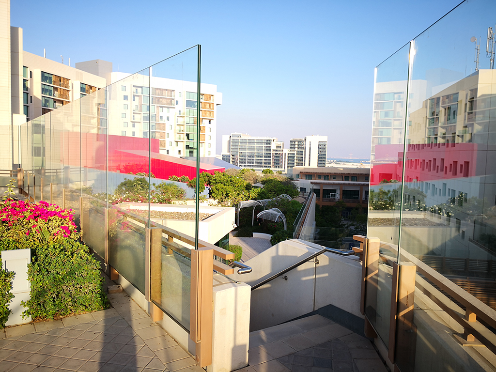

One of the most scenic feature of the NYUAD Campus is its Highline, a pedestrian green area that connects all the buildings at the 2nd floor level. High glass panels were installed to prevent people from falling from the high-line or, most likely, from attempting self-harm. In principle the implementation of safety measures is something we all can agree upon. Aside of correcting the flagrant mistakes when panels are wrongly placed, like the ones highlighted in the photos, it seems that there is no sensible alternative. No matter how unpleasant they are, no matter how much damage they do to the original layout of the campus (they actually shield the morning and evening breezes that were crucial to cool down the outdoor areas) we all agree that self-harm attempts must be prevented.

The question we should ask ourselves is whether design should be implemented just in order to make the act of jumping (or falling) difficult to achieve or there are creative ways to make the act simply unthinkable because its outcomes are nullified. We imagined grass areas or kindergarten areas below the critical bridges and balconies of the highland. Totally non-intrusive features that will nullify the effect of the fall. When modification of the ground is not possible, we can reduce the height of the fall: canopies, wooden roofs will be a welcome addition to the campus architecture, providing more shade to the outdoor areas (when you live in Abu Dhabi there is no such thing as too much shade) and at the same time will make the Highline safe.
Transparent Prevention
Chapter 2: Prevention is Remediation to Remediation